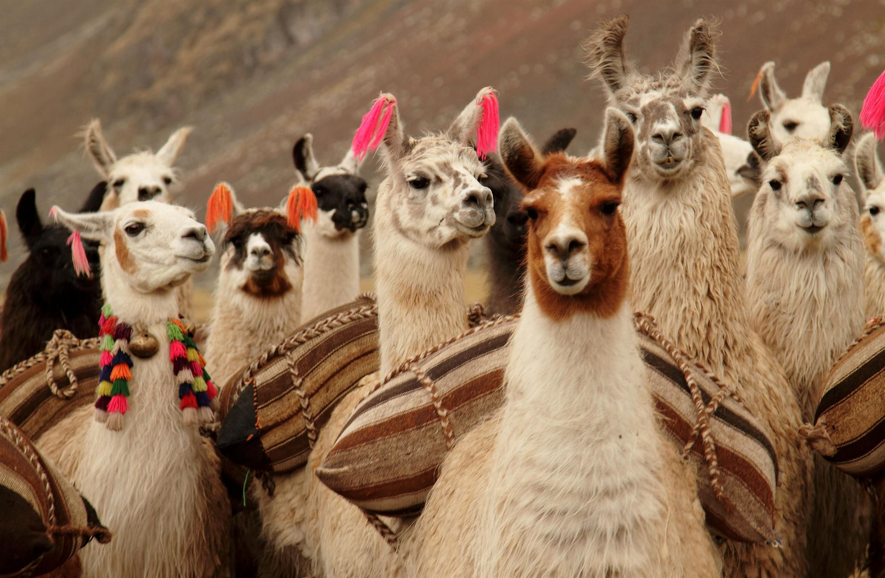
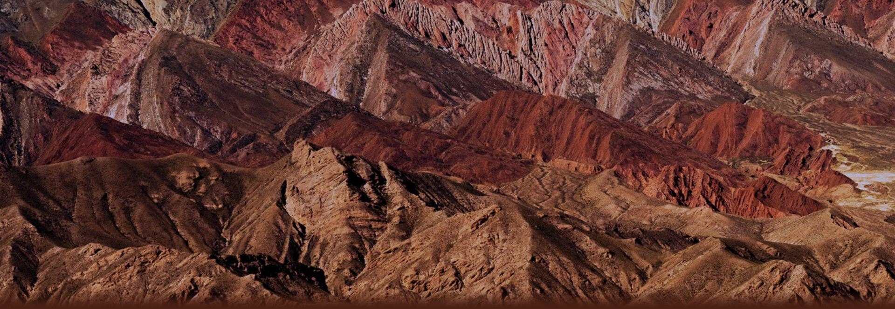
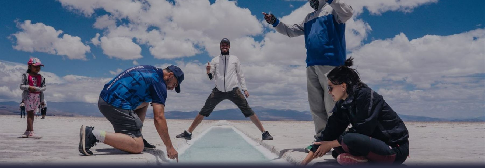
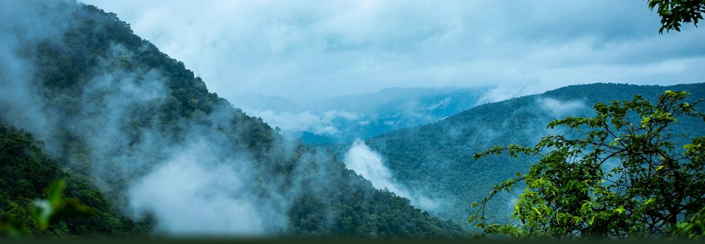
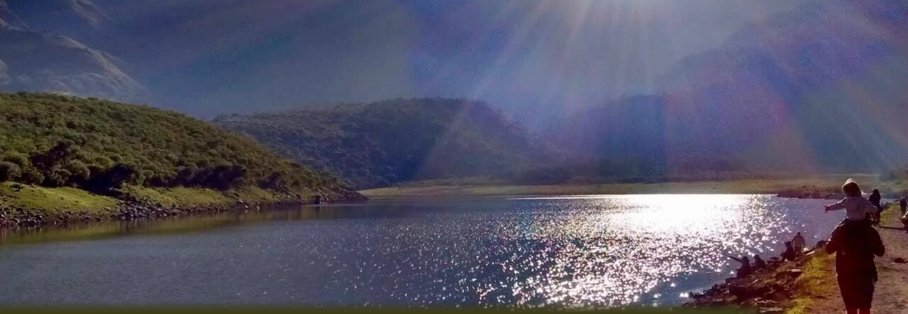
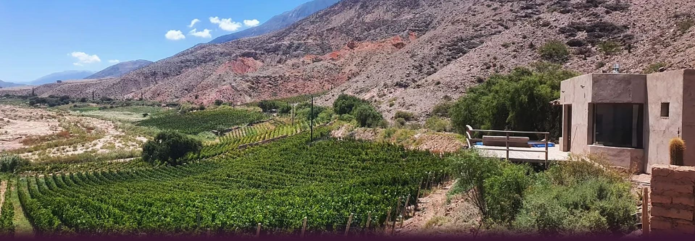

Contanos cuántos días vas a estar en Jujuy y nosotros nos encargamos de armarte la mejor experiencia.
Cuatro pasos y una sola persona a cargo, de principio a fin.
Viajes solo, en pareja, en familia o con tu propio grupo: lo armamos igual. Escribinos y lo pensamos juntos.
Jujuy tiene cuatro paisajes completamente distintos a pocas horas entre sí. No hace falta que elijas uno: según los días que tengas, los combinamos. Esto es lo que vas a encontrar en cada uno.

El Jujuy que ya viste en fotos, y todo lo que las fotos no cuentan.
Es la región más conocida de la provincia y la razón por la que mucha gente llega hasta acá. Cerros que cambian de color según la hora del día, pueblos de adobe donde la vida todavía pasa en la plaza, ferias, música en vivo a cualquier hora y una historia que empezó miles de años antes de que existiera la Argentina.
Lo que no se ve en las fotos es cuánto cambia según cuándo la recorras. Te llevamos a cada lugar en el momento del día en que la luz lo enciende, nos salimos de la ruta principal cuando vale la pena, y te contamos lo que estás mirando. Si tenés pocos días, es la zona que más te rinde.

El silencio más grande que vas a escuchar en tu vida.
Arriba de los 3.500 metros el paisaje se vacía y empieza otra cosa. Horizonte plano, cielo enorme, una sensación de escala que no se parece a nada de lo que conocés. Es la región que más impresiona a quien nunca estuvo en altura, y de la que te vas a traer la mayoría de las fotos del viaje.
También es la que peor sale si vas por tu cuenta y a cualquier hora. Hay momentos del día en que el lugar es completamente otro, y hay que saber cuándo subir, cuánto quedarse y cómo cuidarse de la altura. Nosotros te lo armamos para que la veas en su mejor momento y vuelvas bien.

La selva que nadie espera encontrar en Jujuy.
Acá está el secreto mejor guardado de la provincia. A pocas horas de los cerros pelados empieza una selva de montaña con niebla enganchada entre los árboles, helechos del tamaño de una persona, cascadas, aguas termales y un aire tibio que no se parece en nada al de la altura. Nadie espera encontrar esto en Jujuy, y es casi siempre lo que más recuerdan los que vuelven.
Es la región donde más trabajamos y la que mejor conocemos: caminos que no aparecen en las guías, lugares donde no vas a cruzarte con nadie, y gente que nos recibe hace años. Si venís buscando naturaleza de verdad y no sólo miradores, es acá.

La región que casi nadie tiene en el plan y a todos les termina gustando.
Verde, templada y a pocos minutos de la ciudad. Es la más tranquila de las cuatro: bosques, agua, campo abierto y pueblos donde no pasa nada, en el mejor sentido de la frase. Es el Jujuy que no sale en las postales y el que más sorprende a quien ya creía conocer la provincia.
La usamos mucho para los primeros días del viaje, porque ayuda a aclimatarse antes de subir a la altura y porque es perfecta si llegás cansado de viajar. Y si tenés poco tiempo, es la mejor manera de ver algo distinto sin alejarte demasiado.

Nuestra ruta del vino, en una provincia donde la vid crece donde casi nada crece.
En Jujuy se hace vino a alturas en las que la mayoría de los cultivos no prosperan. Esa pelea contra el clima, la altura y el sol es la que le da a estos vinos un carácter que no tiene ningún otro vino argentino, y es también lo que convirtió a la provincia en uno de los destinos enológicos que más crece del país.
Armamos recorridos por bodegas de distintas zonas, con cata, maridaje y charla con quienes hacen el vino. De medio día o de varias jornadas, según cuánto quieras entrar en el tema. Pasamos a buscarte y te dejamos de nuevo en tu alojamiento.
Es la mejor opción si ya conocés Jujuy y querés una entrada distinta, y también si viajás por el vino y no sabías que acá también se hace.
Para quien quiere el mismo viaje con otro nivel de descanso: hospedajes elegidos, gastronomía cuidada, grupos más chicos y un ritmo pensado para disfrutar sin apuro.
Decinos cuántos días tenés. Del resto nos encargamos nosotros.